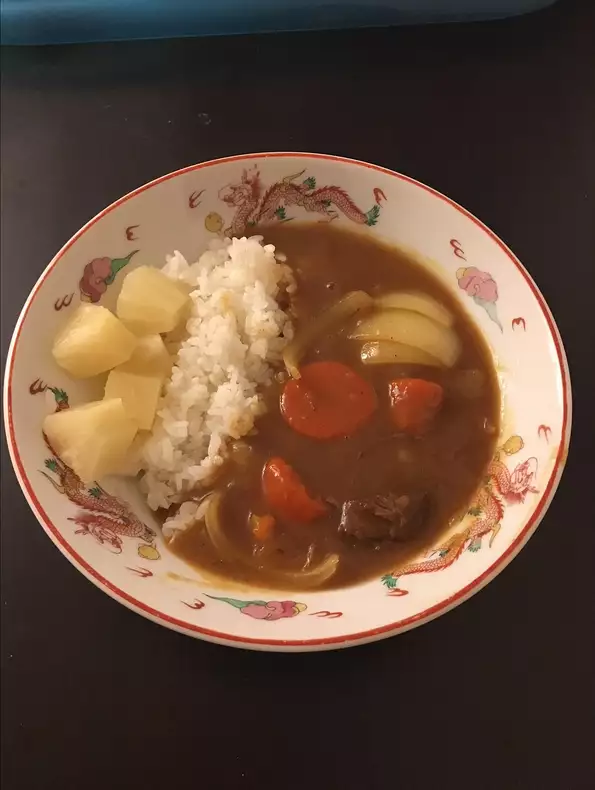

Japanese Curry

Description
Japanese curry is different from Indian or Thai curries. It is more of a brown stew and it can be mild or spicy, depending on your tastes. The curry roux, from no heat to very spicy, can be bought at any international grocery store. It can be served over white rice or with udon noodles. This recipe is very flexible; it can easily be made for more or less people. It can also be frozen (don't put the potatoes in).
Ingredients
- Beef chunks
- Onions
- Water
- Carrots
- Potatoes
- Japanese Curry Roux
Steps
- Heat oil in a 6-quart pot over medium-high heat. Add beef and saute until brown, 5 to 7 minutes. Add onions and cook until starting to soften, about 3 minutes. Add ketchup and Worcestershire sauce. Stir to coat. Add cayenne pepper. Pour in water to cover mixture by 1 or 2 inches. Add carrots and bouillon.
- Simmer, skimming fat off the surface of the broth as needed, for 30 minutes. Add potatoes. Stir in 1 package of curry roux and let dissolve; add remaining curry as needed to achieve desired thickness. Continue simmering until beef and vegetables are tender, about 30 minutes more.
*The recipe and picture comes from https://www.allrecipes.com/recipe/274077/japanese-curry/
Back to Home